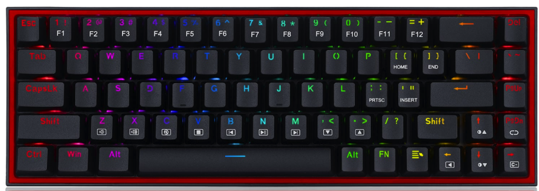

5

Redragon K631-RGB
Redragon K631-RGB er et kompakt 65% mekanisk tastatur, perfekt til gamere, der ønsker høj præcision uden at fylde hele skrivebordet. Tasterne har taktil feedback, og RGB-belysningen kan tilpasses med adskillige effekter. Byggekvaliteten er imponerende til prisklassen, og de programmerbare taster giver fleksibilitet, både til gaming og produktivitet. Det lille format gør det ideelt til små skriveborde eller turneringer, hvor transportabilitet er vigtigt. Der er ikke så mange forhandlere, når det kommer til dette tastatur, hvilket man skal være opmærksom på, hvis man gerne vil købe i DK.
Specifikationer
- Switches: Outemu Blue mekaniske
- Layout: 65%, 84 taster
- RGB-belysning
- Forbindelse: USB-C
- Vægt: 700 g
Fordele
- Kompakt og transportabel med fuld funktionalitet
- RGB-belysning med mange tilpasningsmuligheder
- Hurtige og taktile taster til gaming
Ulemper
- 65% layout kan mangle dedikerede piletaster for nogle brugere
- Lidt tungt for et kompakt tastatur